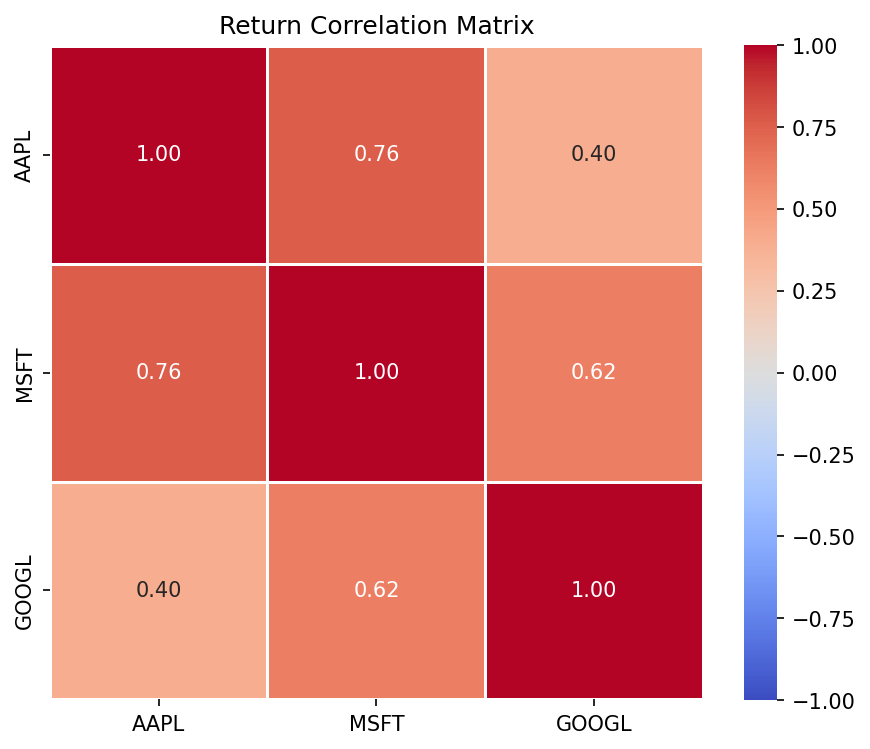
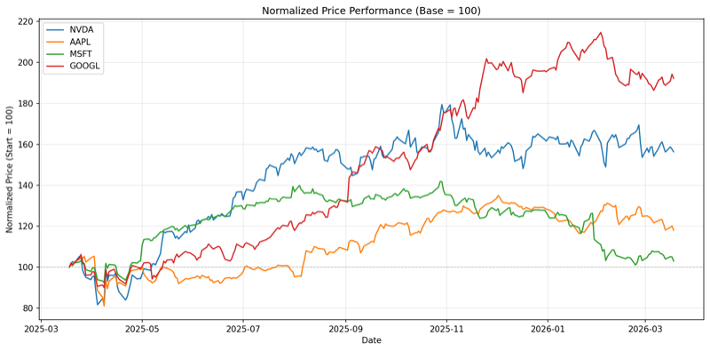
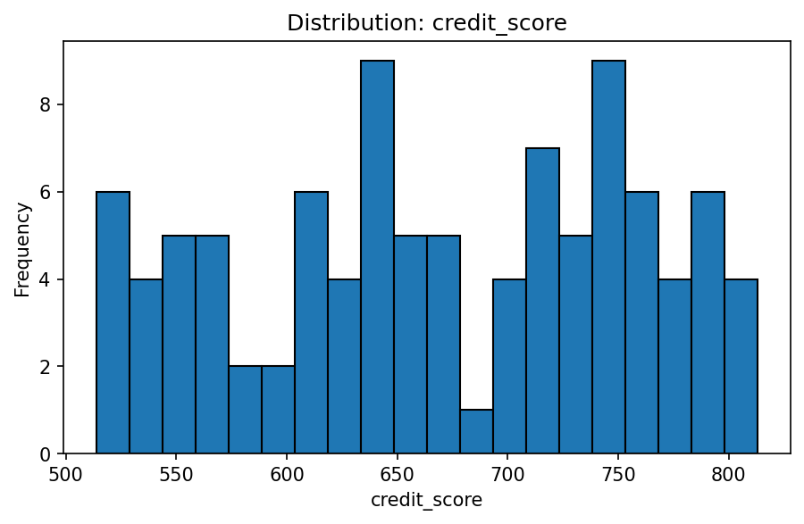
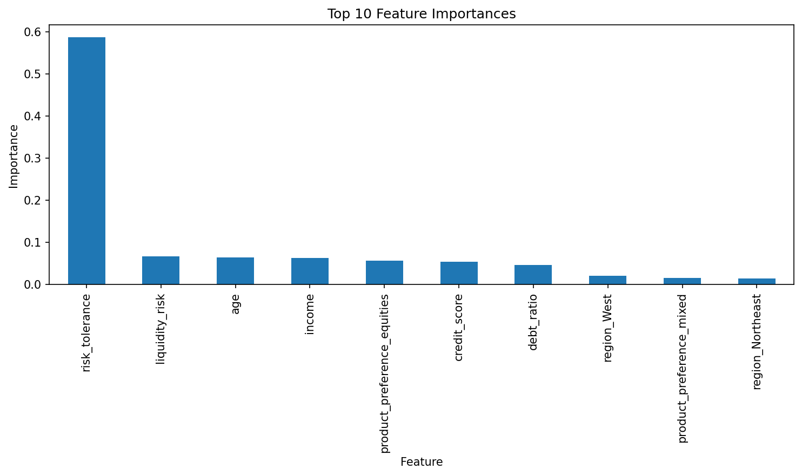

See yourself in the scenario
Each walkthrough drops you into a real finance situation — the kind you face every quarter. Pick your role, read the scenario, and see what the skill produces.
Equity Research Analyst
Your head of research assigns you coverage of NVDA within the semiconductor sector. You need the quantitative backbone — price history, risk profile, and peer comps — before writing a single page of the initiation report.
Compare NVDA against AMD, INTC, AVGO, and QCOM over the last year and show me correlation and risk metrics for each name.

Run /walkthrough-equity-research in Claude Code for the full scenario.
Hedge Fund Portfolio Manager
Your CIO wants a volatility regime assessment and pair trading opportunities across two sectors — semiconductors and mega-cap tech. You need to identify volatility dislocations, cross-sector diversification potential, and correlation-based pair candidates.
Show me volatility regimes for NVDA, AMD, and AVGO over the last 6 months and compare cross-sector correlation against AAPL, MSFT, and GOOGL.

Run /walkthrough-hedge-fund in Claude Code for the full scenario.
Investment Banking Analyst
Your Managing Director is pitching an acquisition advisory mandate for a mid-cap cloud infrastructure company. You need quantitative exhibits for the pitch book — performance comps, risk profiles, and correlation analysis for MSFT, GOOGL, AMZN, CRM, and ORCL.
Compare MSFT, GOOGL, AMZN, CRM, and ORCL over the last 9 months with risk metrics and correlation analysis for the pitch deck.

Run /walkthrough-investment-banking in Claude Code for the full scenario.
FP&A Analyst
You are preparing quarterly budget variance analysis. Finance has exported a client portfolio dataset from the ERP system. Before building the forecast model, you need to profile the data quality, identify which columns drive liquidity risk, and run a regression model to generate budget projections.
Profile this ERP export for data quality issues, then train a liquidity risk model and score our top 3 client segments.

Run /walkthrough-fpa in Claude Code for the full scenario.
Private Equity VP
You are evaluating three acquisition prospects for Fund III with a $400M deployment target. The investment committee meets Friday. You need a data-driven ranking of three prospects — growth equity, leveraged buyout, and early-stage venture — before the IC deck is finalized.
Train a scoring model on our deal database and classify these three prospects for the IC memo.

Run /walkthrough-private-equity in Claude Code for the full scenario.
Senior Controller
You are preparing for the quarterly close. The accounting team has exported a client portfolio dataset from the ERP system for consolidation review. Before signing off on the trial balance, you need to profile the transaction data, identify segment distributions, and run a classifier to validate client segments match expected patterns.
Profile this ERP export for the quarterly close, flag any segment misclassifications, and validate the general ledger segments.

Run /walkthrough-accounting in Claude Code for the full scenario.
Ready to run a walkthrough? Get Started Free